První kroky v Pythonu
Contents
1. První kroky v Pythonu#
Python patří mezi nástroje pro dávkové zpracování dat. V tomto případě se nepostupuje interaktivně jako například v MS Excel, ale uživatel sestaví posloupnost příkazů a interpreter provede tyto příkazy podobně, jako spuštění programu. Výhody jsou následující.
Možnost pracovat s daty neomezené velikosti.
Snadná reprodukovatelnost.
Lepší přehlednost v rozsáhlejších projektech.
Možnost zařazení datové analýzy jako stavebního kamene delšího řetězce.
Možnost neomezeného opakování stejné analýzy v cyklu nad jinými daty.
Nevýhoda dávkového zpracování je, že si nemůžeme požadované výstupy zajistit klikáním v menu. Jedná se však o nástroje s širokou uživatelskou základnou a v době kvalitního vyhledávání na Internetu není těžké „vygooglit“ na webech s dotazy a odpověďmi příkazy nutné pro kreslení grafů různých typů a další dílčí úkoly spojené se zpracováním dat. Výhodou jsou mnohem větší možnosti, než má Excel. Srovnatelný se skriptováním v jazyce Python je jedině program Matlab, který je na univerzitě dostupný, ale vzhledem k vysoké ceně nebývá dostupný mimo univerzity a mimo velké firmy.
1.1. Ke způsobu práce#
Učíme se na příkladech.
Začínáme s modifikací hotových modelů. Experimentujte. Zkoušejte příklady z nápovědy, z přednášek a cvičení.
Model stavíme z hotových bloků, málo modelů píšeme od nuly. Často najdeme podobný problém a ten si přizpůsobíme. Například najdeme obrázek podobný našemu zamýšlenému v galerii a odsud vidíme, jaké příkazy a volby je potřeba použít.
Detaily k nastavení a volbám při volání funkcí hledáme v manuálu. Pro rychlou orientaci slouží cheatsheety.
Spousta dotazů s kvalitními odpověďmi je na serveru StackExchange nebo jinde. Popište hesly problém ve vyhledávacím políčku Google a zkuste vyhledat podobné dotazy a odpovědi na ně. Totéž s chybovými hláškami, pokud jim nerozumíte.
1.2. K syntaxi v jazyce Python#
záleží na mezerách na začátku řádku
příkazy tvořící hlavní tělo začínají na začátku řádku
bloky uvnitř cyklů a podmínek jsou odsazeny o pevný počet mezer (doporučené jsou čtyři pro jednotlivé úrovně)
zlom řádku může být uvnitř závorek s argumentem funkce a uvnitř závorek pro seznamy, potom nezáleží na odsazení
komentáře jsou jednořádkové a uvozeny znakem #
doporučený styl podle Style guide
pocet_opakovani = 10 # promenne pojmenovavame tak, aby nazev vypovidal o obsahu dat
pocet_velkych_cisel = 0
"""
Při práci nemusíme vypisovat celé jméno proměnné, ale můžeme používat
doplňování kódu, kdy napíšeme jenom prvních několik písmen a po stisku
domluvené klávesy (zpravidla tabelátor) se název buď doplní, nebo,
je-li více variant, se nabídnou možná doplnění pomocí menu.
V tomto textu též vidíte možnost víceřádkových komentářů. Stačí je
napsat jako víceřádkové řetězce, tj. řetězce uvozené a ukončené třemi
uvozovkami.
"""
for i in range(pocet_opakovani):
if i<5:
# tisk informace o cisle i
print("Číslo",i,"je malé")
else:
print(
"Číslo",
i,
"je velké"
)
pocet_velkych_cisel = pocet_velkych_cisel + 1
print(
"Vyskytlo se celkem",
pocet_velkych_cisel,
"velkych cisel"
)
Číslo 0 je malé
Číslo 1 je malé
Číslo 2 je malé
Číslo 3 je malé
Číslo 4 je malé
Číslo 5 je velké
Číslo 6 je velké
Číslo 7 je velké
Číslo 8 je velké
Číslo 9 je velké
Vyskytlo se celkem 5 velkych cisel
Všimněte si mimo jiné, že Python počítá a indexuje od nuly, podobně jako JavaScript a některé další jazyky. První položka v seznamu má index nula, druhá jedna atd.
1.3. Aritmetika s čísly#
a = 4 # promenna a obsahuje nastavenou hodnotu
b = a + 2 # promenna b bude o dve vetsi nez promenna a
a = b**2 # promenna a se nahradi druhou mocninnou promenne b, promenna b zustava na sve hodnote
a # tisk hodnoty promenne, vystup posledniho vypoctu se tiskne, neni nutne pouzivat print
36
Proměnné si udrží hodnoty i v dalších políčkách. V dalším políčku zmenšíme hodnotu \(a\) o 30.
a-30
6
Operace se zapisují běžným způsobem jako například v Excelu, pouze umocňování se označuje dvojicí hvězdiček. Takto vypadá druhá mocnina trojky.
3**2
9
1.3.1. Úkol 1#
Následující políčko s kódem 1**2 + 2**2 + 3**2 + 4**2
sčítá druhé mocniny přirozených čísel až do čísla 4. Opravte políčko tak, aby sečetlo druhou mocninu přirozených čísel až do čísla 8.
1**2 + 2**2 + 3**2 + 4**2
30
1.4. Hrátky s textem#
Textový řetezec se bere jako seznam znaků a je možné ho ukládat do proměnná, přistupovat k prvnímu nebo poslednímu znaku, k několika prvním nebo několika posledním znakům, ke skupině znaků uprostřed atd. Pozor na to, že Python indexuje od nuly a první znak má tedy index nulový. Pokud je index záporný, znamená to pořadí od konce.
retezec="MENDELU"
retezec
'MENDELU'
retezec[0]
'M'
retezec[-2]
'L'
retezec[:4]
'MEND'
retezec[-3:]
'ELU'
retezec[2:4]
'ND'
retezec + " je prostě " + retezec + "."
'MENDELU je prostě MENDELU.'
veta = "".join([retezec," je prostě ",retezec,"."])
veta
'MENDELU je prostě MENDELU.'
len(veta)
26
veta[:-5]
'MENDELU je prostě MEN'
(10*(retezec+"-"))[:-1]
'MENDELU-MENDELU-MENDELU-MENDELU-MENDELU-MENDELU-MENDELU-MENDELU-MENDELU-MENDELU'
"-".join([retezec for i in range(10)])
'MENDELU-MENDELU-MENDELU-MENDELU-MENDELU-MENDELU-MENDELU-MENDELU-MENDELU-MENDELU'
"-".join([retezec for i in range(10)]).lower().replace("m","M")
'Mendelu-Mendelu-Mendelu-Mendelu-Mendelu-Mendelu-Mendelu-Mendelu-Mendelu-Mendelu'
Tyto techniky s přístupem k obsahu podle indexu využijeme, když budeme mít data v seznamu a budeme chtít přistupovat například k první nebo poslední hodnotě, nebo k několika prvním či několika posledním hodnotám.
1.4.1. Úkol 2#
Vložte pod toto políčko klávesou B (nebo pomocí menu) políčko pro vložení příkazů. Můžete také jít na následující políčko a vložit nové políčko klávesou A. Musíte být v příkazovém módu, tj. needitovat žádné pole. Kolem aktuálního políčka musí být modrý rámeček.
Do proměnné
muj_pokusuložte řetězec „LDF je nejlepší“.Určete délku řetězce pomocí funkce
len.
1.5. Knihovny#
Jenom základní funkce jsou v Pythonu přístupny přímo. Další funkce načítáme ve formě knihoven. Pro práci s daty zpravidla nejprve importujeme knihovny pro numeriku, práci s datovými tabulkami a pro kreslení grafů. Přitom používáme pro knihovny obvyklé zkratky, například np namísto numpy. Snipet pro vložení těchto knihoven najdete v rozbalovacím menu Snipets.
import matplotlib.pyplot as plt
import numpy as np
import pandas as pd
1.6. Práce se seznamem hodnot#
1.6.1. Zadání hodnot přímo do seznamu#
Pro nakreslení grafu vyzkoušejte následující kód.
x = [0, 1, 2, 3, 4, 5, 6]
y = [0, 1, 4, 9, 16, 25, 36]
plt.plot(x,y)
[<matplotlib.lines.Line2D at 0x7f2208ca6410>]
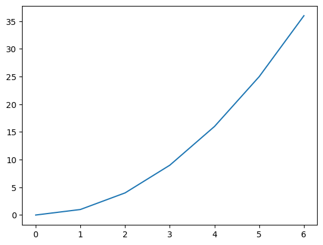
Grafy je možno modifikovat dle potřeby. Následující dvojice příkazů vykreslí dva grafy předvolenými barvami. Jeden graf je složen z teček, druhý z teček a lomené čáry.
plt.plot(x,x, "o", color="green")
plt.plot(x,y, "o-", color="red");
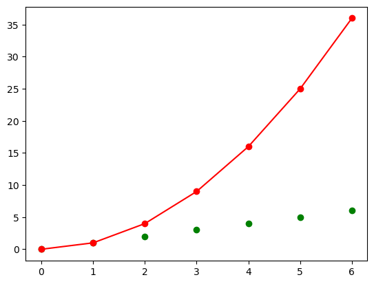
1.6.2. Vygenerování položek v seznamu#
V předchozím jsme zadali funkční hodnoty přímo. Často se funkční hodnoty počítají. Například zde vypočteme druhé mocniny prvních několika přirozených čísel.
y = [i**2 for i in range(9)]
y
[0, 1, 4, 9, 16, 25, 36, 49, 64]
sum(y)
204
plt.plot(y)
[<matplotlib.lines.Line2D at 0x7f22084f0760>]
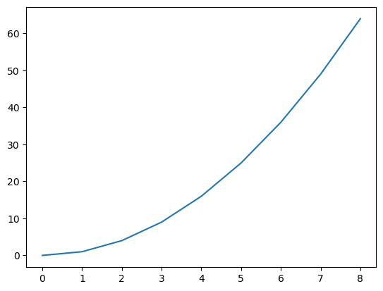
Uvnitř hranatých závorek může být přechod na nový řádek. Na počtu mezer na začátku v tomto případě nezáleží.
Tuto techniku využijeme například, pokud budeme chtít vyřešit model pro různé parametry a výstupy uložit pro další práci.
parametry = [0,1,2,4,6,15]
seznam = [
i**3
for i in parametry
]
seznam
[0, 1, 8, 64, 216, 3375]
1.7. Práce s poli np.array#
S poli typu np.array se pracuje podobně jako se seznamy ale dokážeme s nimi dělat rovnou matematické operace a zápis je pohodlnější.
a = [1,2,3,4,5]
A = np.array(a)
print(A)
for i in A[1:]:
print("Prvek je "+str(i))
b = [10,20,30,40,50]
B = np.array(b)
#print(a*b) # toto by zpusobilo chybu
print(A*B)
print(100*A+3)
print(A**2)
print(B**A)
print(10*a)
[1 2 3 4 5]
Prvek je 2
Prvek je 3
Prvek je 4
Prvek je 5
[ 10 40 90 160 250]
[103 203 303 403 503]
[ 1 4 9 16 25]
[ 10 400 27000 2560000 312500000]
[1, 2, 3, 4, 5, 1, 2, 3, 4, 5, 1, 2, 3, 4, 5, 1, 2, 3, 4, 5, 1, 2, 3, 4, 5, 1, 2, 3, 4, 5, 1, 2, 3, 4, 5, 1, 2, 3, 4, 5, 1, 2, 3, 4, 5, 1, 2, 3, 4, 5]
x = [0.01*i for i in range(100)]
y = [i**2 for i in x]
plt.plot(x,y)
plt.grid()
len(x)
100

# S polem typu array je možné provést operaci umocnění rovnou
N = 100
x = np.array([1/N*i for i in range(N)])
# jeste lepe by bylo nasledujici
# x = np.linspace(0,1,100)
y = x**2
plt.plot(x,y)
plt.grid()
len(x)
100
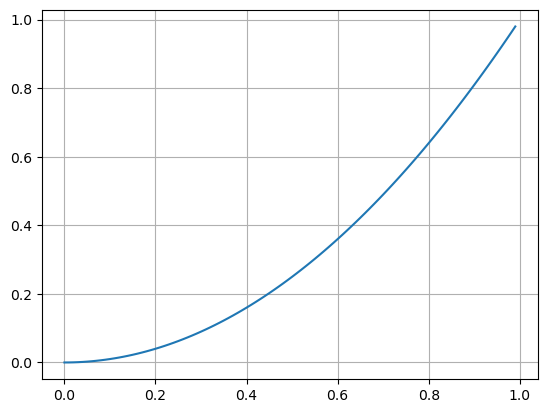
1.7.1. Úkol 3#
Nakreslete graf třetí mocniny na intervalu \((-1,1)\). Jako výchozí bod použijte
snippet Graf funkce, Numpy (horní menu, rozbalovací položka Snippets).
# Sem vložte příkazy pro nakreslení grafu funkce x**3 na intervalu od -1 do 1.
1.8. Tabulky, pandas#
x = np.linspace(0,10,1001)
y = x**2
df = pd.DataFrame()
df["x"] = x
df["y"] = y
#df["suma"] = df["x"] + df["y"]
# Kratsi alternativa: df["suma"] = df.x + df.y
df
| x | y | |
|---|---|---|
| 0 | 0.00 | 0.0000 |
| 1 | 0.01 | 0.0001 |
| 2 | 0.02 | 0.0004 |
| 3 | 0.03 | 0.0009 |
| 4 | 0.04 | 0.0016 |
| ... | ... | ... |
| 996 | 9.96 | 99.2016 |
| 997 | 9.97 | 99.4009 |
| 998 | 9.98 | 99.6004 |
| 999 | 9.99 | 99.8001 |
| 1000 | 10.00 | 100.0000 |
1001 rows × 2 columns
df["soucin"] = df.x * df.y
df
| x | y | soucin | |
|---|---|---|---|
| 0 | 0.00 | 0.0000 | 0.000000 |
| 1 | 0.01 | 0.0001 | 0.000001 |
| 2 | 0.02 | 0.0004 | 0.000008 |
| 3 | 0.03 | 0.0009 | 0.000027 |
| 4 | 0.04 | 0.0016 | 0.000064 |
| ... | ... | ... | ... |
| 996 | 9.96 | 99.2016 | 988.047936 |
| 997 | 9.97 | 99.4009 | 991.026973 |
| 998 | 9.98 | 99.6004 | 994.011992 |
| 999 | 9.99 | 99.8001 | 997.002999 |
| 1000 | 10.00 | 100.0000 | 1000.000000 |
1001 rows × 3 columns
Tabulky je možno použít k operacím se sloupci podobně jako to znáte z Excelu, ale přehledněji.
Tabulky využijeme k ukládání stejně dlouhých datových řad. Výhodou je, že tabulky mají mnoho nástrojů na kreslení, manipulaci se sloupci a podobně.
df.plot(x="x")
<AxesSubplot:xlabel='x'>
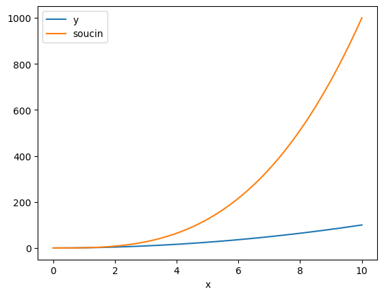
x = np.linspace(0,2*np.pi,100)
df = pd.DataFrame()
df["x"]=x
df["sin"] = np.sin(df.x)
df["cos"] = np.cos(df.x)
df["soucet mocnin"] = df.sin**2 + df.cos**2
df
| x | sin | cos | soucet mocnin | |
|---|---|---|---|---|
| 0 | 0.000000 | 0.000000e+00 | 1.000000 | 1.0 |
| 1 | 0.063467 | 6.342392e-02 | 0.997987 | 1.0 |
| 2 | 0.126933 | 1.265925e-01 | 0.991955 | 1.0 |
| 3 | 0.190400 | 1.892512e-01 | 0.981929 | 1.0 |
| 4 | 0.253866 | 2.511480e-01 | 0.967949 | 1.0 |
| ... | ... | ... | ... | ... |
| 95 | 6.029319 | -2.511480e-01 | 0.967949 | 1.0 |
| 96 | 6.092786 | -1.892512e-01 | 0.981929 | 1.0 |
| 97 | 6.156252 | -1.265925e-01 | 0.991955 | 1.0 |
| 98 | 6.219719 | -6.342392e-02 | 0.997987 | 1.0 |
| 99 | 6.283185 | -2.449294e-16 | 1.000000 | 1.0 |
100 rows × 4 columns
1.9. Obrázky#
# vypocet dat
x = np.linspace(0,6*np.pi,1000) # data na vstupu, definicni obor funkce
y = np.sin(x) # funkcni hodnoty
# vykresleni dat do obrazku
fig,ax = plt.subplots(figsize=(10,3))
plt.plot(x, y, color='red')
# kosmeticke upravy
ax.set(
title='Graf',
ylabel='Sinus',
xlabel='Nezávislá proměnná',
ylim=(-2,2)
);
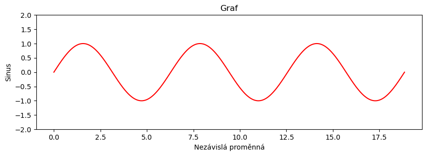
1.10. Vykreslení dvourozměného pole#
Pokud druhý argument není pole čísel, ale pole složené z polí, kreslí se příslušný počet křivek.
x = np.linspace(0,1.5)
seznam_funkci = [ [i**2,i+1,2-i**2] for i in x ]
popisek = ["parabola","přímka", "otočená parabola"]
plt.plot(x,seznam_funkci, label=popisek)
plt.legend();
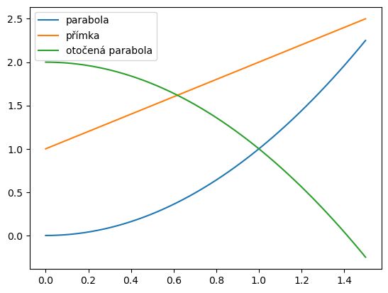
Body do každé křivky se berou ze sloupců. Pokud tedy
vytvoříme pole ze seznamu křivek, musíme jej transponovat, tj. řádky přepsat do
sloupců. Aby se dalo pole transponovat, je nutné jej mít jako np.array.
x = np.linspace(0,1.5)
seznam_funkci = np.array([x**2,x+1,2-x**2])
popisek = ["parabola", "přímka", "otočená parabola"]
plt.plot(x,seznam_funkci.T, label=popisek)
plt.legend();

Uvedený postup využijeme u modelů, kde řešením dostaneme časový průběh více neznámých, například při modelování interakce mezi dvěma a více populacemi. Nemusíme kreslit každou křivku samostatně, ale nakreslíme je jedním příkazem.
1.11. Dva obrázky pod sebou, data z tabulky#
Někdy chceme nakreslit do jednoho obrázku dvě funkce se společným definičním
oborem, ale značně rozdílnými funkčními hodnotami. Řešením je buď nakreslit
obrázky pod sebe a se sdílenou vodorovnou osou (viz níže), nebo nakreslit do
jednoho obrázku obě funkce, ale každou s jiným měřítkem na svislé ose, tedy
použít v jednom obrázku dvě svislé osy (viz Google a hesla matplotlib a twinx).
# tabulka funkcnich hodnot pro sinus a kosinus
df = pd.DataFrame()
df["x"] = np.linspace(0,6*np.pi,100)
df["sin"] = np.sin(df.x)
df["cos"] = np.cos(df.x)
# Tisk začátku tabulky pro kontrolu
print(df.head())
# vykresleni dat do obrazku
fig,ax = plt.subplots(2,1,figsize=(8,4),sharex=True) # zalozeni obrazku se dvema soustavami souradnic pod sebou
df.plot(x="x",y="sin",ax=ax[0], legend=False)# prvni graf
df.plot(x="x",y="cos",ax=ax[1], legend=False)# druhy graf
# dekorace grafu
ax[0].grid() # vykresleni mrizky
ax[1].grid() # vykresleni mrizky
ax[0].set(ylabel="Sinus")
ax[1].set(ylabel="Kosinus");
x sin cos
0 0.000000 0.000000 1.000000
1 0.190400 0.189251 0.981929
2 0.380799 0.371662 0.928368
3 0.571199 0.540641 0.841254
4 0.761598 0.690079 0.723734
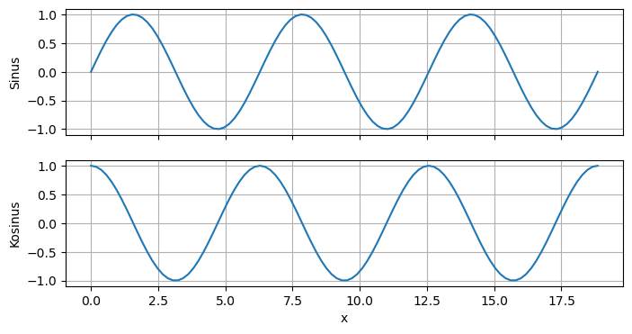
1.12. Růst populace v prostředí s omezenou nosnou kapacitou#
Kód simuluje pro různé hodnoty parametru \(r\) chování modelu populace, vyvíjející se v prostředí s omezenou nosnou kapacitou podle vztahu
N = 50
df = pd.DataFrame()
seznam_r = [1.5,2, 2.5, 2.8, 3, 3.5, 3.8,3.9]
for r in seznam_r:
x = np.zeros(N) # vytvoření seznamu potřebné délky
x[0]=0.1
for i in range(N-1):
x[i+1] = r*x[i]*(1-x[i])
df[r] = x
fig,ax = plt.subplots(figsize=(20,8))
df.plot(ax=ax,style="o-")
plt.legend(title=r"parametr $r$");
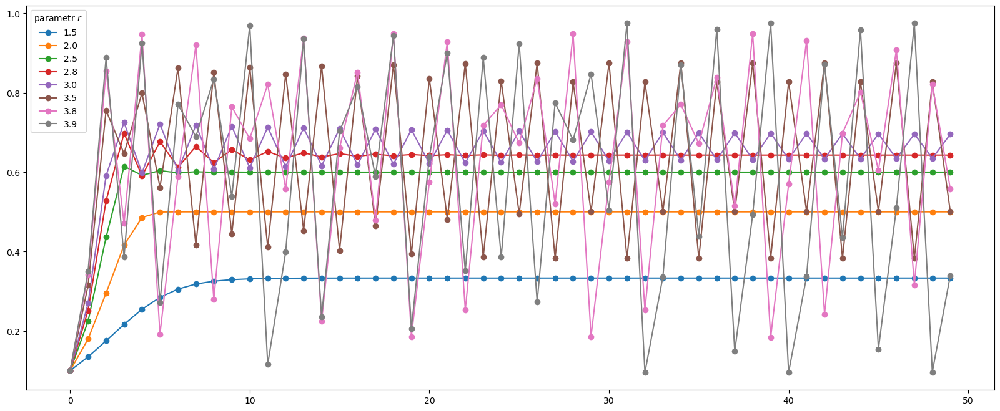
Obrázky můžeme nakreslit také přehledněji do mřížky se sdílenými hodnotami na osách.
fig,axs = plt.subplots(int(len(seznam_r)/2),2,sharex=True, sharey=True)
ax = axs.flatten()
for i,r in enumerate(seznam_r):
ax[i].plot(df[r],label=r, color="C"+str(i))
fig.legend(title=r"Hodnota $r$")
fig.suptitle("Řešení diskrétní logistické rovnice");
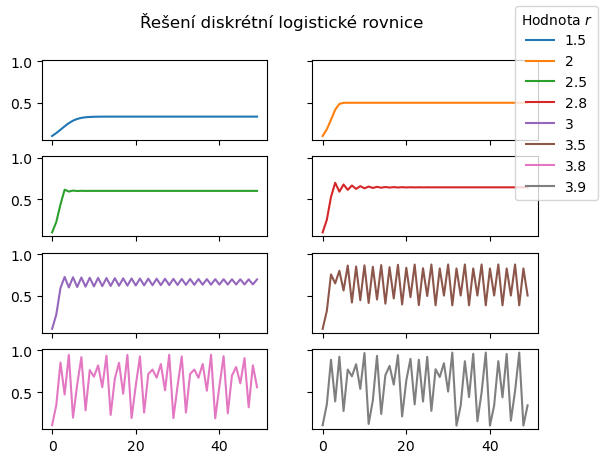
1.13. Každá věc se dá udělat více způsoby …#
Do mřížky umí grafy uspořádat i přímo příkaz pro kreslení proměnné obsahující tabulku.
df.plot(
subplots=True,
layout=(int(len(seznam_r)/2),2),
sharex=True,
sharey=True);
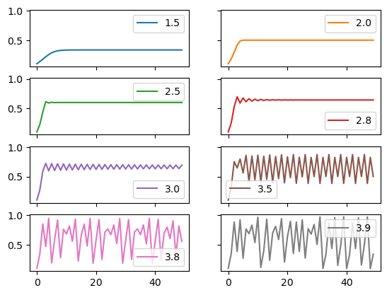
Je také možné počítat pro všechny hodnoty parametru \(r\) současně. Potom stačí jeden cyklus. Nemusí se dělat cyklus pro každou hodnotu parametru samostatně.
N = 50
df = pd.DataFrame()
seznam_r = [1.5,2, 2.5, 2.8, 3, 3.5, 3.8,3.9]
x = np.zeros([N, len(seznam_r)]) # vytvoření seznamu potřebné délky
x [0,:] = 0.1
for i in range(N-1):
x[i+1,:] = seznam_r*x[i,:]*(1-x[i,:])
fig,ax = plt.subplots(figsize=(15,4))
plt.plot(x,"o-")
plt.legend(seznam_r,title=r"parametr $r$");
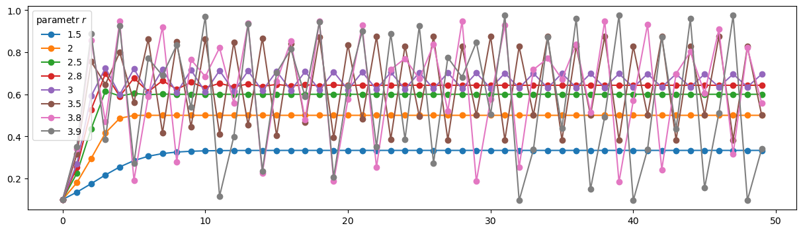